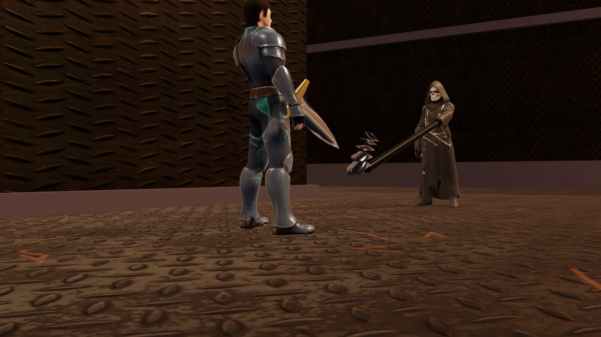

3D arena fighter
Astral Clash
Pick a fighter. Read the arena. Take two rounds.
Fourteen fighters, ten arenas and five modes, from best-of-three duels to co-op boss fights and survival waves. Challenge a friend online with a room code, or play side by side on one keyboard.
- Online 1v1
- Local split-screen
- Gamepad
- Phones online
A year as a wolf
The Corridor
You are the wolf. The map you inherited is wrong.
Aspen inherits her mother Willow's map of a territory that no longer matches it: roads have torn the land apart. Hunt, lead a growing pack, and carry the bloodline through the years. Hold Space to read the map.
- Single player
- Narrative
- One year in a wolf's life
Played with a keyboard.
Neon twin-stick survival
PulseArena
Dodge the core. Sever its shots. Tear it down.
A pulsing core fires waves outward across a ring arena. Weave through them, and cut through a shot's glowing tail to destroy it and wound the core. Twenty levels, Endless, and two-player versus and co-op on one keyboard, with new upgrades every run.
- 20 levels
- Endless
- Local 2-player
- Plays offline